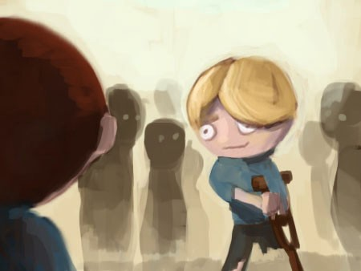
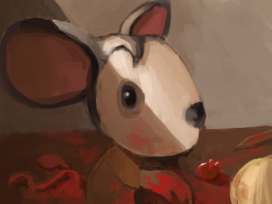
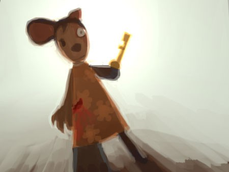
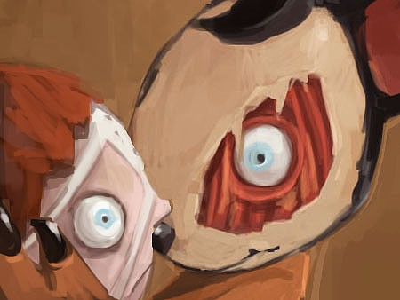
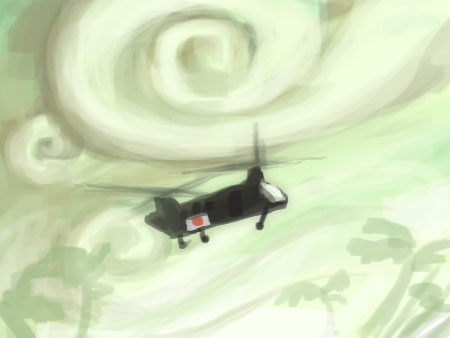
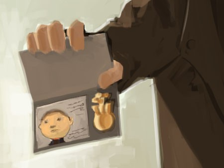
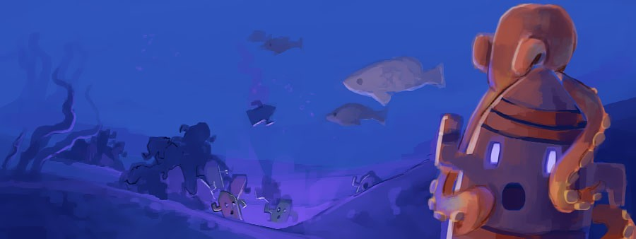

Именно в этот момент у меня не было никаких вариантов — ни плана, ни надежды, ни даже кровати, чтобы спрятаться. Пенни знала, что не я взял её бумаги. Она не верила, что это Нук. Я даже не знал, кто, по её мнению, это сделал, но, если бы я ошибся, она бы продолжала убивать, пока я не угадаю… или пока никого не останется. Я не знаю, смог бы я жить с этим. А что бы она сделала со мной? Мысли проносились в голове, как пули, но разбивались о стену, как мячики для гольфа о кирпичную стену. Я не знал, что делать. Секунды тянулись как вечность.
«Это был я!»


Билли:Что ты делаешь?
По бокам головы — гладкая кожа, без следов ушей. Он был глухим.

Пенни:Ах, Филлип. Ты всегда был тем ещё тем шилом, да? Не хочешь прогуляться со мной?
Она хихикнула от мысли, что Филлип будет ковылять рядом с ней во время прогулки, и снова ушла с балкона. Фил. Я знал это имя. Он был одним из тех, кто отвечал мне, когда я составлял карту. Стражи не тащили его. Когда он проходил мимо и поймал мой взгляд, на его губах мелькнула слабая улыбка. Я уже думал, что все слетели с катушек, но понял: у Фила был свой план. Только он не сработает. Пенни никогда не поверит, что этот парень, едва стоящий на ногах, мог ночью вломиться в дом и стащить её бумаги.
Билли:Филлип, не надо!
Его след простыл. Вся толпа как заворожённая смотрела в пустой проход, куда ушёл Филлип, в ожидании криков или возвращения Пенни на балкон. А что потом — выбирать следующего и продолжать до утра? Это был мой единственный шанс, и я рванул, даже не думая.
Я вырвался из рук остолбеневшего охранника и побежал за Филлипом. Вдвоём мы бы могли справиться с ней — без её псов у нас бы был шанс.
Но шанса не было.

Я завернул за угол и увидел Пенни, согнувшуюся над мальчиком, как стервятник. Оба были в крови, но один не шевелился. Филлип был мёртв, но кровь была не только его. Рядом с ним валялся костыль — его конец был заточен. Я раньше не замечал. В боку Пенни зияла рана, из которой текла густая, тёмная кровь. Она остановилась, услышав мои шаги. Она копалась в его груди когтистой лапой, как ребёнок в корзине с игрушками, выбирая органы, которые хотела забрать, и разбрасывая остальное.
Внезапно потемнело в глазах — как будто мозг пытался защитить меня. Но на самом деле это псы сбили меня с ног. Ключ в кармане впился в бедро и выпал на землю.
Когда я снова увидел свет, надо мной нависло жуткое лицо Пенни. В руке она держала ключ. Глаза горели.

Пенни:ГДЕ ТЫ ЕГО НАШЕЛ?
Мне нечего было сказать. Пенни вцепилась в меня с силой, невероятной для раненой мыши, и просто волокла меня через грязь, через заднюю дверь, в дом и вверх по лестнице.
Она пронзительно крикнула стражникам:
Пенни:ЗАДЕРЖАТЬ!
Мы снова оказались в спальне. Она с силой, которой нет у человека, впечатала меня в стену, и я рухнул на пол. Пенни закрыла двери на балкон, метнулась ко мне и вонзила коготь мне в плечо, прижимая к стене. Её лицо оказалось в сантиметре от моего, и ужас сковал меня, когда я понял, что смотрю в свой собственный глаз.

Пенни:Где Том? ПОЧЕМУ ЕГО ЗДЕСЬ НЕТ?
Билли:Я...
Мой голос сорвался. Её когтистая ладонь перекрыла мне дыхательное горло.
Билли:Сказал же тебе, Том мёртв.
Она с размаху впечатала меня в стену.
Пенни:Ты даже и мухи обидеть не можешь, жалкое подобие человека. ГДЕ ТОМ?
Билли:Он убил себя! Он убил себя, потому что не мог вынести мысли о том, чтобы прожить ещё одну минуту с таким чудовищным уродом природы, как ТЫ! Он предпочёл смерть, чем просыпаться каждое утро рядом с ЧУДОВИЩЕМ!
Лицо Пенни скривилось от ярости и боли, а затем стало почти спокойным. Она разжала когти, и из моего плеча тонкими струйками потекла кровь. Она отступила. Её голос, который только что визжал как баньши, вдруг стал почти человеческим.
Пенни:Он убил себя… из-за меня?
Я не мог оторвать взгляд от этих эмоциональных качелей. Пенни смотрела сквозь меня, её взгляд был пустым, мысли блуждали где-то далеко.
Пенни:Том, мы должны были быть вместе. Ты обещал — ещё несколько дней. Всего несколько дней. Мы должны были быть вместе. Навсегда.
На её искажённом лице появилось искреннее сожаление. Это было почти страшнее, чем её ярость, которая внезапно вернулась, когда она снова посмотрела на меня. Безумная усмешка дёрнула её губы, как будто кто-то дёрнул за нитки.
Пенни:Знаешь, что я сделаю, Билли? Я не убью тебя. Нет, это было бы неинтересно. Я ЗАСТАВЛЮ ТЕБЯ СТРАДАТЬ. ВЕЧНО. Вот чего хотел бы Том. Начну с твоих рук и ног…
Пенни перечисляла способы, которыми с удовольствием будет меня пытать. Она ушла в свою кровожадную фантазию, мечтательно глядя в потолок и придумывая всё новые способы сделать мне больно. Было страшно, и я верил каждому её слову.
Но Пенни ошиблась. Она привыкла править страхом, и это работало. Но она сама никогда не боялась по-настоящему. Не так, как я. Она не понимала, что она — вирус, и что каждое лекарство, которое она мне давала, укрепляло меня. Это был её последний удар — сильный, но не смертельный.
Я был вакциной.
Моё тело работало на адреналине. Пока она болтала о моих мучениях, я медленно встал. Мышцы болели от напряжения. Я наконец сделал то, что боялся раньше. То, что боялся сделать Том.
Я оттолкнулся от стены и бросился на Пенни, молотя кулаками по её уродливой башке, по ране в животе, по шее и плечам — куда попало. Она не ожидала такого напора, попятилась, пытаясь защититься. Её когти рвали мою одежду и кожу, но я ничего не чувствовал. Она рухнула на пол, ошарашенная. Я не отставал, загнал её к дверям на балкон и продолжал молотить. Она заорала от боли и вылетела через французские двери, вся в свежих ранах. Я прыгнул на неё, и мы оба врезались в перила. Вся толпа внизу смотрела на эту кровавую сцену.
Я продолжал эту дикую свалку, всё превратилось в месиво — я уже не знал, куда бью, просто не мог остановиться. С последним леденящим душу воплем Пенни перевалилась через перила, утянув меня за собой, и мы рухнули вниз. Три этажа. Влажный глухой удар. Пенни оказалась подо мной. Грудь заныла — возможно, сломал ребро. Пенни повезло меньше — она приняла на себя весь удар и мой вес. Я встал на колени и со всей силы врезал кулаком по её лицу. Потом ещё. И ещё. Пока оно не превратилось в кровавую кашу. Её голова безжизненно повернулась, лицо было неузнаваемо, а из него выкатился мой глаз. Я поднял его. Сжал в руке. Как сумасшедший приз с ярмарки.
Это мой приз!
Толпа столпилась вокруг, все смотрели с открытыми ртами. В воздухе повисла тишина, слышно было только моё тяжёлое дыхание. Боль начала проступать в руках и ногах, когда на ветру раздался другой звук — низкое гудение, которое пульсировало откуда-то издалека.
Жители подняли головы к небу, не понимая, что ещё может случиться в этом кошмаре. И тут из толпы раздался крик.
«Вертолёт!»

Чёрная точка на горизонте приближалась всё быстрее, и вскоре деревья вокруг дома согнулись под ветром от зависшего в воздухе вертолёта.
Я испуганно оглянулся на жителей-зверей. Некоторые уже убегали, другие застыли на месте. Охранник рядом со мной переводил взгляд с трупа на меня, потом на вертолёт — в его глазах было полное замешательство. Я ждал, что они навалятся на меня, чтобы отомстить за Пенни, но ничего не произошло. Они просто стояли, тупо глядя в небо, пока вертолёт садился на лужайку перед домом. На борту был знак — белое поле с красным солнцем.
Из вертолёта выскочили вооружённые люди и оцепили территорию. Высокий мужчина в костюме пробрался сквозь ошарашенную толпу и направился ко мне.

Он показал мне значок и с лёгким акцентом спросил: «Вы Том?»
На этом заканчивается моя история.
Эпилог
Если ты читаешь это, то, наверное, хочешь знать, что было дальше. Я бы чувствовал себя неловко, если бы не записал это здесь — хотя бы для себя.
Меня арестовали и отправили обратно в США. Правительство попросило меня записать всё, что случилось на острове, и я составил этот отчёт. Мне потребовались годы терапии, чтобы я мог хотя бы думать об этом без паники. Мне почти тридцать. И сидя здесь, я сам с трудом верю во всё это. Наверное, это положат в папку с пометкой «бред» — и никто больше не увидит.
Но легче, когда это записано.
Я так и не вернулся домой. Прошло много времени. Мама, наверное, всё ещё жива и ждет меня. Может, я просто напугаю её или расстрою. Может, я просто боюсь. Но я сделаю это скоро. Честно.
И да, для истории: нас нашли потому, что с особняка подали сигнал бедствия. Нук, наверное, сказал Пенни, что везёт новых врачей. Она убила большинство старых.
Но я долго думал: зачем ему было умирать, если он ждал спасения?
Мой психиатр говорит, что травма часто заставляет людей подтверждать свои худшие страхи. Она думает, что Том так боялся провала, что убил себя, чтобы убедиться, что провал случится. Я считаю, это чушь. Том умер, потому что сломался. Я понял, что он был моим единственным другом. Но я не понимал, что я был его единственным другом. Когда Пенни приказала ему привести меня в особняк, он не смог. Он не хотел воспоминаний, вины, осуждения. Он выбрал лёгкий выход.
Меня держали в лаборатории несколько месяцев. Проводили тесты. Во мне было что-то особенное — я был устойчив к гироидам. Они не знают, биология это, химия или что-то мистическое. Но они сделали вакцину из моей крови. Она помогает.
Пенни не обратилась правильно, и когда ей вставили мой глаз, её тело отторгло его. Это её убивало. Интересно, была ли она раньше ещё хуже? Если бы не это — смог бы я её победить? Лучше не думать.
У некоторых жителей мои гены обращали действие гироидов вспять. Некоторые даже вернулись в человеческий облик. Как будто этот животный переход был просто вирусом. Я был устойчив, но не невосприимчив. Сколько бы это заняло у меня? Месяцы? Дни? Года?
Говорят, всё случается не просто так. Сделал бы я это снова, если бы знал, что спасу их? Честно — не знаю.
Остров закрыли. Японские военные топят гироидов в океане. Это безопаснее, чем хранить их в лабораториях. Но мне пришло в голову: даже если они топят их понемногу — на дне океана их должно быть уже много. И я не могу не думать: если они превращают людей в животных…
Во что они превращают животных?
